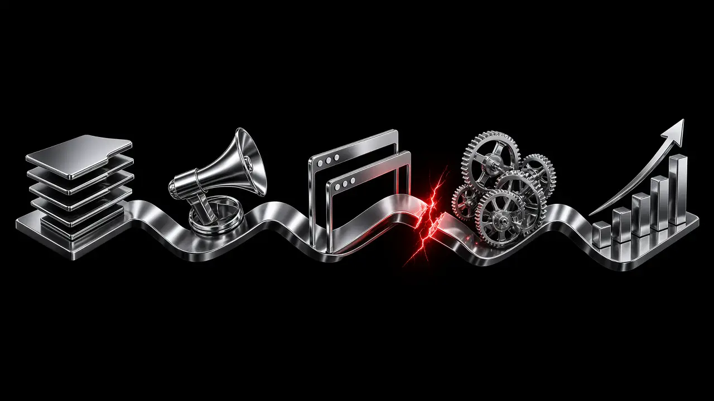

Strategize
The claim, the offer, and the plan, before a new campaign or a new tool.
SWG Studio · Working digital systems lab
Strategy, workshops, and growth across the whole business.
We plan, build, and run websites, campaigns, CRM, AI workflows, and operating systems.
Integrated. Synchronized. Resilient.
The work
Strategy, the workshop that builds the system, and the growth that follows. Not a slogan, and not a tool list.
The claim, the offer, and the plan, before a new campaign or a new tool.

The site, the handoff, and the training so the team can run it without the founder in the middle.

Campaigns, ads, and a reading the team can use when the offer changes.
The chain
One weak link costs you customers. In this picture the chain snaps between the website and the customer record: a request comes in, and nobody owns the next step.

What you say
What goes wrong. If the offer is fuzzy, the ads and the site each invent a version. A buyer cannot repeat what you do.
What SWG does. We lock the claim first. Then the site and the ads can say the same thing.
The attention you pay for
What goes wrong. The ad promises one thing and the page says another. Money goes out before anyone can read what came back.
What SWG does. We line the ad up with the page, and we do not raise spend until that result is visible.
The page they land on
What goes wrong. Someone asks, and the request lands in one inbox. Nobody owns the next step. That is the red break in the chain.
What SWG does. We rebuild the page so the offer is obvious, and we connect the form to a record with an owner.
After they ask
What goes wrong. The founder is still passing notes by hand. Sales and delivery do not share a record, so nobody can say which inquiries were answered.
What SWG does. Every request gets an owner, a next step, and a record the team can see.
Whether it worked
What goes wrong. Without a shared definition of a lead, later work is a guess and the ad budget changes blind.
What SWG does. We name what counts, and we put that reading where the people who spend the money can use it.
Choose a part of the chain. Arrow keys move across it.
02
Hover or focus a symptom to see which connections it stresses. Choosing one opens the diagnostic with that break selected.
03 · Example. Not a client result.
A template for documenting an inquiry path. This is not a client engagement and it reports no results.
This entry shows the fields a real SWG Studio case study would carry. It is not a client. It is not a result.
Objective. Give every inquiry an owner and a next step the rest of the team can see.
Problem. Requests arrive through a form and then sit in one person's inbox. Sales waits for a forward. Delivery asks for the same context again. Nobody can say which inquiries were answered.
Intervention. Name the offer on the page, connect the form to a shared record, and write the handoff before any new campaign spend.
Stack is illustrative for this template, not a client's production list: marketing site, form handler, shared inbox or CRM, analytics events.
Illustration. Not a client result.
Drag the handle, or use the arrow keys. The left side is a business whose tools do not share a path. The right side is the same kind of work on one chrome line. This is a drawing, not a client.
Before, disconnectedAfter, one line
04
A new site that marketing cannot measure, or ads the page cannot catch, recreates the leak. The work is the connection.
05
01
Find the break with evidence: the offer, the page, the record, the spend, the event that is supposed to count.
02
The people who touch the path agree on the owner and the next step before a new tool arrives.
03
The site, the campaign, the handoff, and the reading are connected on purpose.
06
Starting ranges. The agreement sets the fee. The number is not the mystery. The scope is.
$12k-$20k
A website that finally says what the business has become.
$25k-$45k
Not just a better site. A connected acquisition system.
$45k-$85k+
Build the site people remember, and the system your team can actually run.
Ranges are starting points. Scope, timing, and fee are set in the agreement before work begins. Larger operating-system builds stay with Support Wellness Global and are scoped separately.
07
Name the symptom. The diagnostic recommends a scope, not a slogan. This preview does not send a form.
Select at least one symptom. The recommendation stays empty until you do.
swg.studio is a separate site for the web design and digital marketing work of Support Wellness Global. It is a working digital systems lab.
Healthier businesses. Clear offers, owned handoffs, and measurements a team can use. Not spa branding, and not a yoga practice.
Will Wiedenmann directs SWG Studio. The parent firm is Support Wellness Global. Company-wide operating systems, and work that needs a different scope than the three studio plans, stay with the parent firm.
This page does not invent a client list, a headcount, or a set of results. Proof will be published when a client has approved it.
Can you fix it? With SWG, you can.
Name the symptom. The diagnostic recommends a scope, not a slogan.